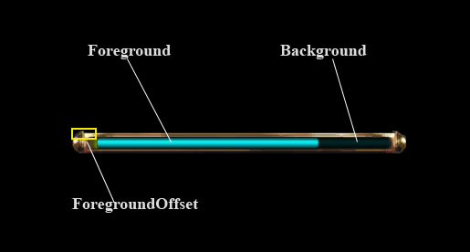

The StatusBar provides a windows style status bar control. This Window element is an automated combination of several other window components.
| StatusBar | The StatusBar provides a windows style status bar control. |
| Implementation Details | The StatusBar is a combined window element that provides a percentage bar based on min/max values. |
| XML Definition | This is the StatusBar xml definition. |
| XML Tag | |
| Required Attributes | You need to specify valid values for all of these elements to get the StatusBar to create properly. |
| foreground | The name of a <HorizontalResizeIMage> definition for the foregroupd ‘filled’image. |
| Optional Attributes | These attributes are optional, depending on the StatusBar that you are trying to create. |
| background | The name of a <HorizontalResizeIMage> definition for the background ‘unfilled’image. |
| reverseFill | When set, the bar will fill from right to left, rather than left to right. |
| interpolate | When set, the bar will interpolate between value changes. |
| interpolaterate | The rate of interpolation if “interpolate” is set to true. |
| Functions | |
| Functions | |
| StatusBarSetCurrentValue() | Sets the current value for the StatusBar. |
| Functions | |
| Functions | |
| StatusBarGetCurrentValue() | Returns the the current value for the StatusBar. |
| StatusBarSetMaximumValue() | Sets the maximum value for the StatusBar. |
| Functions | |
| Functions | |
| StatusBarGetMaximumValue() | Returns the the maximum value for the StatusBar. |
| Functions | |
| Functions | |
| StatusBarStopInterpolating() | Stops interpolating to a new value and applies it immediately instead. |
| Functions | |
| Functions | |
| StatusBarSetForegroundTint() | Sets the color tint value for the window used as the ‘filled’ portion of the StatusBar. |
| Functions | |
| Functions | |
| StatusBarSetBackgroundTint() | Sets the color tint value for the window used as the ‘unfilled’ portion of the StatusBar. |
The StatusBar is a combined window element that provides a percentage bar based on min/max values.
The The StatusBar is a combined window element that provides a percentage bar based on min/max values. is comprised of the following components:

You use a StatusBar by calling StatusBarSetMaximumValue() to set the ‘full’ value for the bar. You can then set StatusBarSetCurrentValue() to set the amount displayed. By default, StatusBars will immediately apply value changes. By setting the “interpolate” property to “true,” you can change them to instead interpolate to changes over time. To immediately apply a change to an interpolating StatusBar, call StatusBarStopInterpolating().
This is the StatusBar xml definition.
| XML Tag | |
| Required Attributes | You need to specify valid values for all of these elements to get the StatusBar to create properly. |
| foreground | The name of a <HorizontalResizeIMage> definition for the foregroupd ‘filled’image. |
| Optional Attributes | These attributes are optional, depending on the StatusBar that you are trying to create. |
| background | The name of a <HorizontalResizeIMage> definition for the background ‘unfilled’image. |
| reverseFill | When set, the bar will fill from right to left, rather than left to right. |
| interpolate | When set, the bar will interpolate between value changes. |
| interpolaterate | The rate of interpolation if “interpolate” is set to true. |
You need to specify valid values for all of these elements to get the StatusBar to create properly.
The name of a <HorizontalResizeIMage> definition for the foregroupd ‘filled’image.
A string value, which is the name of a valid HorizontalResizeImage.
These attributes are optional, depending on the StatusBar that you are trying to create.
The name of a <HorizontalResizeIMage> definition for the background ‘unfilled’image.
A string value, which is the name of a valid HorizontalResizeImage.
When set, the bar will fill from right to left, rather than left to right.
A boolean value.
| ”true” | Fill right->left. |
| ”false” | Fill left->right. |
When set, the bar will interpolate between value changes.
A boolean value.
| ”true” | Interpolates. |
| ”false” | Does not interpolate. |
The rate of interpolation if “interpolate” is set to true.
A float_t value specifying what percentage of the bar should fill over the course of one second.
| 50 | Fill the entire bar in 2 seconds. |
| 100 | Fill the entire bar in 1 second. |
| 200 | Fill the entire bar in 0.5 seconds. |
| Functions | |
| StatusBarSetCurrentValue() | Sets the current value for the StatusBar. |
Sets the current value for the StatusBar.
| statusBarName | (string) The name of the StatusBar. |
| curValue | (number) The value to display on the status bar. |
| nil | no return value |
StatusBarSetCurrentValue( "PlayerWindowHealthBar", GameData.Player.hitPoints.current )
| Functions | |
| StatusBarGetCurrentValue() | Returns the the current value for the StatusBar. |
| StatusBarSetMaximumValue() | Sets the maximum value for the StatusBar. |
Returns the the current value for the StatusBar.
| statusBarName | (string) The name of the StatusBar. |
| curValue | (number) The value to display on the status bar. |
local playerHealth = StatusBarGetCurrentValue( "PlayerWindowHealthBar" )
Sets the maximum value for the StatusBar.
| statusBarName | (string) The name of the StatusBar. |
| maxValue | (number) The max value to display on the status bar. |
| nil | no return value |
StatusBarSetMaximumValue( "PlayerWindowHealthBar", GameData.Player.hitPoints.maximum )
| Functions | |
| StatusBarGetMaximumValue() | Returns the the maximum value for the StatusBar. |
Returns the the maximum value for the StatusBar.
| statusBarName | (string) The name of the StatusBar. |
| maxValue | (number) The max value to display on the status bar. |
local playerMaxHealth = StatusBarGetMaximumValue( "PlayerWindowHealthBar" )
| Functions | |
| StatusBarStopInterpolating() | Stops interpolating to a new value and applies it immediately instead. |
Stops interpolating to a new value and applies it immediately instead.
| statusBarName | (string) The name of the StatusBar. |
| nil | no return value |
StatusBarSetCurrentValue( “PlayerWindowHealthBar”, GameData.Player.hitPoints.current ) StatusBarStopInterpolating( “PlayerWindowHealthBar” )
none
| Functions | |
| StatusBarSetForegroundTint() | Sets the color tint value for the window used as the ‘filled’ portion of the StatusBar. |
Sets the color tint value for the window used as the ‘filled’ portion of the StatusBar.
| statusBarName | (string) The name of the StatusBar. |
| red | (number) The 0 to 255 hue value for red tint level. |
| green | (number) The 0 to 255 hue value for green tint level. |
| blue | (number) The 0 to 255 hue value for blue tint level. |
| nil | no return value, regardless of success or failure |
StatusBarSetForegroundTint( "PlayerWindowHealthBar", 234, 54, 45 )
| Functions | |
| StatusBarSetBackgroundTint() | Sets the color tint value for the window used as the ‘unfilled’ portion of the StatusBar. |
Sets the color tint value for the window used as the ‘unfilled’ portion of the StatusBar.
| statusBarName | (string) The name of the StatusBar. |
| red | (number) The 0 to 255 hue value for red tint level. |
| green | (number) The 0 to 255 hue value for green tint level. |
| blue | (number) The 0 to 255 hue value for blue tint level. |
| nil | no return value, regardless of success or failure |
StatusBarSetBackgroundTint( "PlayerWindowHealthBar", 234, 54, 45 )